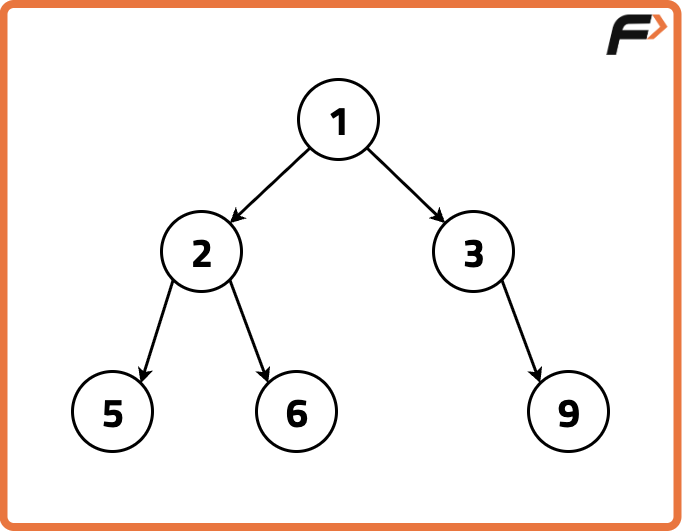
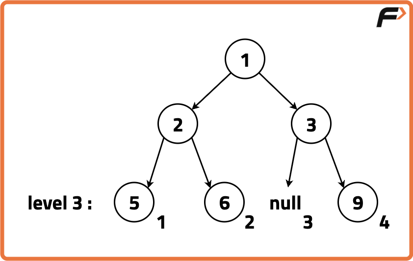
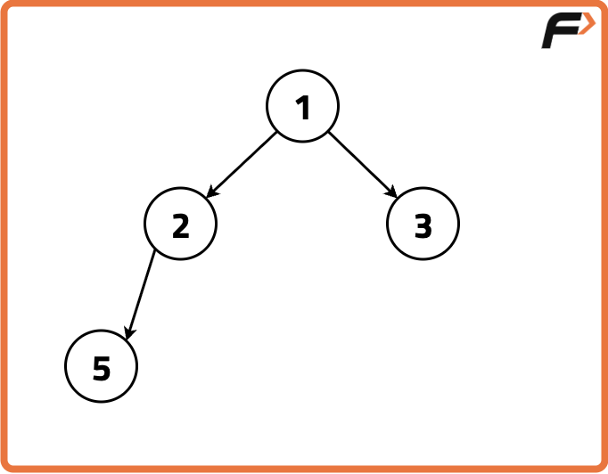
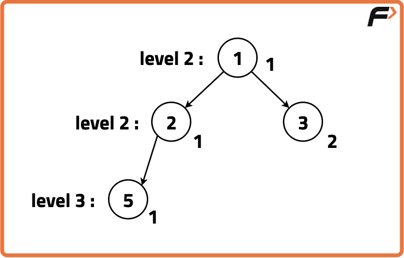
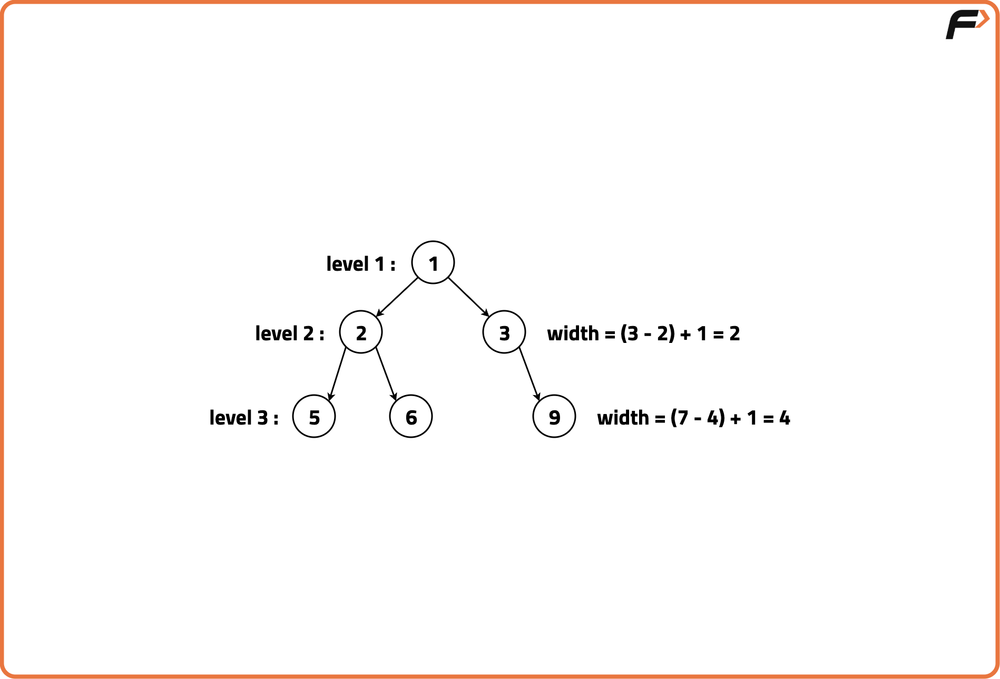
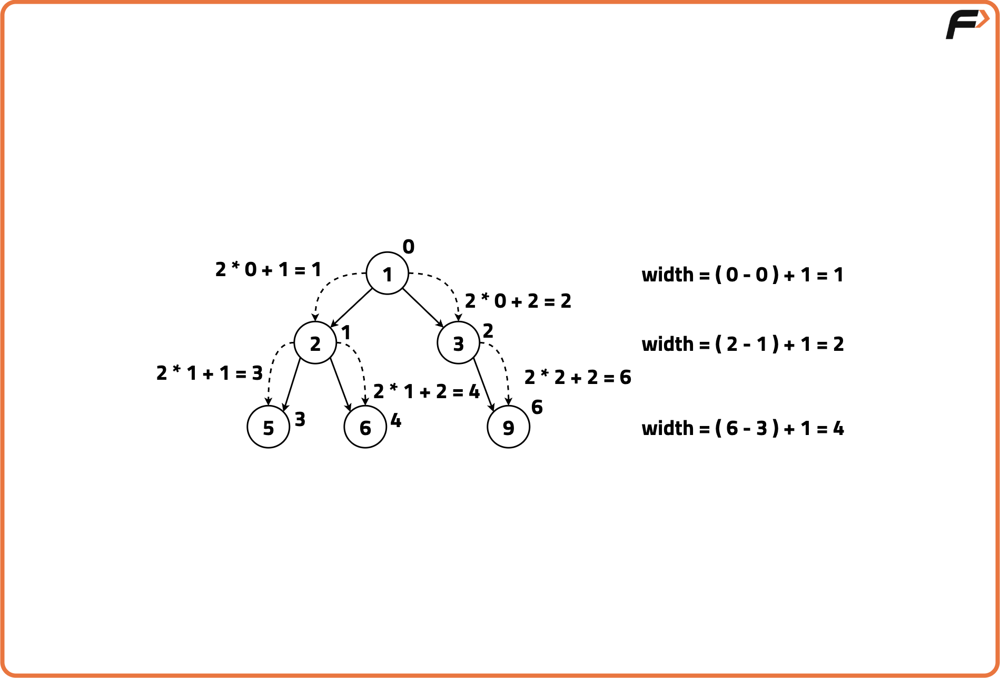
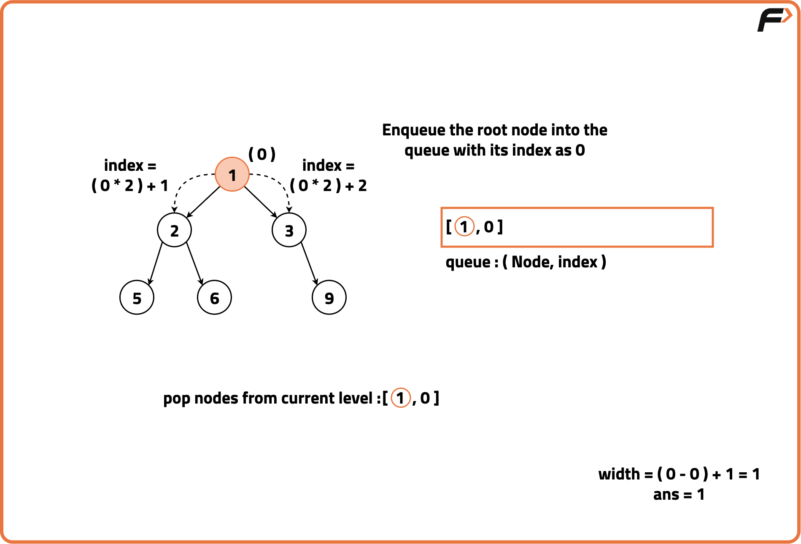
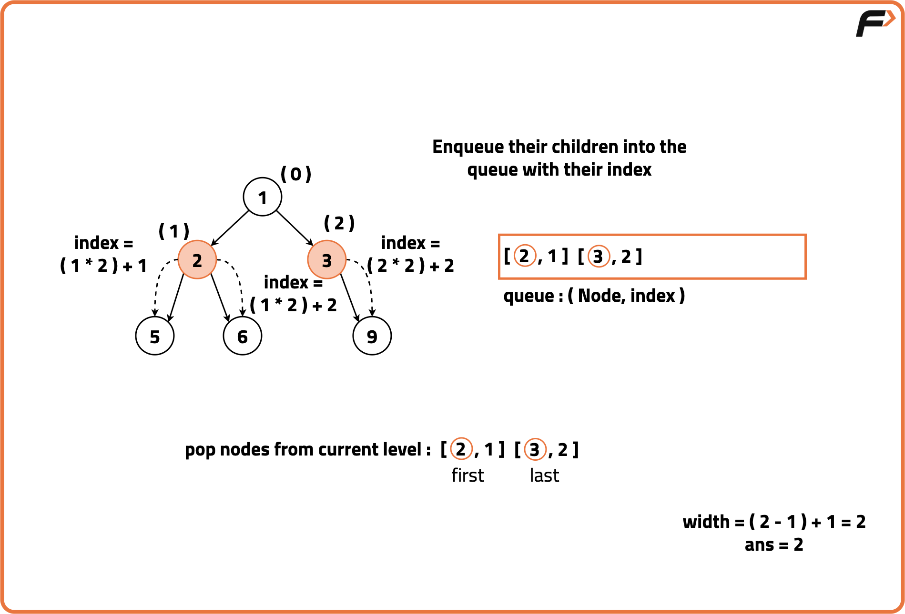
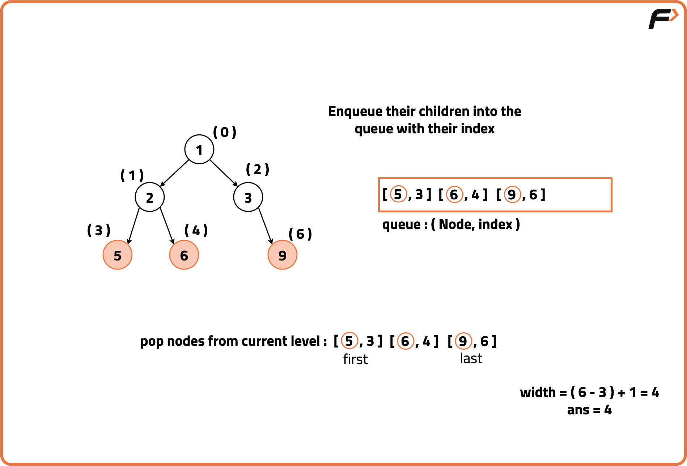

Archived from https://takeuforward.org/data-structure/maximum-width-of-a-binary-tree/
Problem Statement: Given a Binary Tree, return its maximum width.
The maximum width of a Binary Tree is the maximum diameter among all its levels. The width or diameter of a level is the number of nodes between the leftmost and rightmost nodes.
Examples
Input: Binary Tree: 1 2 3 5 6 -1 9

Output: Maximum Width: 4Explanation:
Level 3 is the widest level of the Binary Tree and whose end-to-end width is 4 comprising of nodes: {5, 6, null, 9}.

Input: Binary Tree: 1 2 3 5

Output: Maximum Width: 2Explanation:
Level 2 is the widest level of the Binary Tree and whose end-to-end width is comprised of nodes: {2, 3}.

Disclaimer:
Here is the practice link to help you assess your knowledge better.
It's highly recommend trying to
solve it before looking at the solution.
Approach
Algorithm
To determine the maximum width of a tree, an effective strategy would be to assign and identify indexes for the leftmost and rightmost nodes at each level. Using these indexes, we can calculate the width for each level by subtracting the index of the leftmost node from that of the rightmost node.
Start by assigning an index to the root node as 0. For each level, the left child gets an index equal to 2 * parent index, and the right child gets an index equal to 2 * parent index + 1. Using a level order traversal, we use the leftmost and rightmost nodes at each level to get the width at that level. Keep track of the maximum width encountered during the traversal. Whenever a wider level is found, update the maximum width.
Use level-order traversal (BFS) and track each node’s position as if the tree were a complete binary tree.
For each level in the tree, note the position of the first and last node and compute the width as the difference between these two positions.
For the next level, assign positions to children. After processing all levels, return the maximum width recorded.





Code
#include <bits/stdc++.h>
using namespace std;
// Class definition for a binary tree node
class TreeNode {
public:
int val;
TreeNode* left;
TreeNode* right;
// Constructor to initialize the node value
TreeNode(int x) {
val = x;
left = nullptr;
right = nullptr;
}
};
// Class containing the method to find maximum width
class Solution {
public:
// Function to compute the maximum width of binary tree
int widthOfBinaryTree(TreeNode* root) {
// If the tree is empty, return 0
if (!root)
return 0;
// Initialize maximum width as 0
int maxWidth = 0;
// Queue to perform level-order traversal
// Each element is a pair of node and its index
queue<pair<TreeNode*, int>> q;
// Push root node with index 0
q.push({root, 0});
// Continue BFS until queue becomes empty
while (!q.empty()) {
// Get the number of nodes at current level
int size = q.size();
// Store the index of the first node at this level
int minIndex = q.front().second;
// Initialize variables to track first and last index
int first = 0;
int last = 0;
// Traverse all nodes at the current level
for (int i = 0; i < size; i++) {
// Get the current node and its relative index
int currIndex = q.front().second - minIndex;
TreeNode* node = q.front().first;
// Pop the current node from the queue
q.pop();
// Update the first index if it's the first node
if (i == 0)
first = currIndex;
// Update the last index if it's the last node
if (i == size - 1)
last = currIndex;
// If left child exists, push it with calculated index
if (node->left)
q.push({node->left, 2 * currIndex + 1});
// If right child exists, push it with calculated index
if (node->right)
q.push({node->right, 2 * currIndex + 2});
}
// Update the maximum width if needed
maxWidth = max(maxWidth, last - first + 1);
}
// Return the result
return maxWidth;
}
};
// Main driver function
int main() {
// Create a sample tree
TreeNode* root = new TreeNode(1);
root->left = new TreeNode(3);
root->right = new TreeNode(2);
root->left->left = new TreeNode(5);
root->left->right = new TreeNode(3);
root->right->right = new TreeNode(9);
// Create solution object
Solution sol;
// Call the function and print the result
cout << "Maximum width: " << sol.widthOfBinaryTree(root) << endl;
return 0;
}
import java.util.*;
// Class definition for binary tree node
class TreeNode {
int val;
TreeNode left;
TreeNode right;
// Constructor
TreeNode(int val) {
this.val = val;
this.left = null;
this.right = null;
}
}
// Class containing the method
class Solution {
// Function to find the maximum width of binary tree
public int widthOfBinaryTree(TreeNode root) {
// If the root is null, return 0
if (root == null)
return 0;
// Initialize max width
int maxWidth = 0;
// Queue to store node and its index
Queue<Pair<TreeNode, Integer>> q = new LinkedList<>();
// Push root with index 0
q.offer(new Pair<>(root, 0));
// BFS traversal
while (!q.isEmpty()) {
// Get size of current level
int size = q.size();
// Get the minimum index at this level
int minIndex = q.peek().getValue();
// Variables to store first and last index
int first = 0, last = 0;
// Traverse all nodes in this level
for (int i = 0; i < size; i++) {
// Get current node and index
Pair<TreeNode, Integer> p = q.poll();
TreeNode node = p.getKey();
int currIndex = p.getValue() - minIndex;
// Update first index
if (i == 0)
first = currIndex;
// Update last index
if (i == size - 1)
last = currIndex;
// Push left child if exists
if (node.left != null)
q.offer(new Pair<>(node.left,
2 * currIndex + 1));
// Push right child if exists
if (node.right != null)
q.offer(new Pair<>(node.right,
2 * currIndex + 2));
}
// Update maximum width
maxWidth = Math.max(maxWidth, last - first + 1);
}
// Return the final result
return maxWidth;
}
}
// Driver class
public class Main {
public static void main(String[] args) {
// Create the tree
TreeNode root = new TreeNode(1);
root.left = new TreeNode(3);
root.right = new TreeNode(2);
root.left.left = new TreeNode(5);
root.left.right = new TreeNode(3);
root.right.right = new TreeNode(9);
// Create solution object
Solution sol = new Solution();
// Call the function and print result
System.out.println("Maximum width: " +
sol.widthOfBinaryTree(root));
}
}
from collections import deque
# Class definition for binary tree node
class TreeNode:
# Constructor to initialize node
def __init__(self, val):
self.val = val
self.left = None
self.right = None
# Class containing the function
class Solution:
# Function to calculate maximum width
def widthOfBinaryTree(self, root):
# If root is None, return 0
if not root:
return 0
# Initialize max width
max_width = 0
# Queue for BFS traversal
# Stores node and its index
q = deque()
q.append((root, 0))
# Continue BFS
while q:
# Size of current level
size = len(q)
# Minimum index at this level
min_index = q[0][1]
# Initialize first and last
first = 0
last = 0
# Process all nodes at this level
for i in range(size):
# Get node and relative index
node, idx = q.popleft()
curr_index = idx - min_index
# Set first index
if i == 0:
first = curr_index
# Set last index
if i == size - 1:
last = curr_index
# Append left child if exists
if node.left:
q.append((node.left,
2 * curr_index + 1))
# Append right child if exists
if node.right:
q.append((node.right,
2 * curr_index + 2))
# Update max width
max_width = max(max_width,
last - first + 1)
# Return the answer
return max_width
# Driver code
if __name__ == "__main__":
# Build the tree
root = TreeNode(1)
root.left = TreeNode(3)
root.right = TreeNode(2)
root.left.left = TreeNode(5)
root.left.right = TreeNode(3)
root.right.right = TreeNode(9)
# Create object
sol = Solution()
# Print the result
print("Maximum width:", sol.widthOfBinaryTree(root))
// Class definition for binary tree node
class TreeNode {
// Constructor
constructor(val) {
this.val = val;
this.left = null;
this.right = null;
}
}
// Function to calculate maximum width
function widthOfBinaryTree(root) {
// If tree is empty, return 0
if (!root) return 0;
// Initialize maximum width
let maxWidth = 0;
// Queue for BFS: stores [node, index]
let queue = [[root, 0]];
// BFS loop
while (queue.length > 0) {
// Number of nodes in current level
let size = queue.length;
// Minimum index in level
let minIndex = queue[0][1];
// Initialize first and last
let first = 0, last = 0;
// Traverse current level
for (let i = 0; i < size; i++) {
// Dequeue node and its index
let [node, index] = queue.shift();
// Normalize index
let currIndex = index - minIndex;
// Set first index
if (i === 0) first = currIndex;
// Set last index
if (i === size - 1) last = currIndex;
// Enqueue left child if exists
if (node.left)
queue.push([node.left,
2 * currIndex + 1]);
// Enqueue right child if exists
if (node.right)
queue.push([node.right,
2 * currIndex + 2]);
}
// Update maximum width
maxWidth = Math.max(maxWidth, last - first + 1);
}
// Return the result
return maxWidth;
}
// Driver code
// Build the binary tree
let root = new TreeNode(1);
root.left = new TreeNode(3);
root.right = new TreeNode(2);
root.left.left = new TreeNode(5);
root.left.right = new TreeNode(3);
root.right.right = new TreeNode(9);
// Call the function and print
console.log("Maximum width:", widthOfBinaryTree(root));
Complexity Analysis
Time Complexity: O(N), each node is processed once in level order traversal. Space Complexity: O(N), in worst case, the queue holds all the nodes of the last level i.e. N/2 nodes.